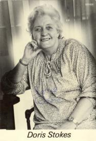

Doris Stokes8.31pm BST. We are back home at Springfields. We left Billericay at 8.30am, drove to Belgrave Square for Doris Stokes’ demonstration at S.A.G.B. [The Spiritualist Association of Great Britain], walked back to the West End for lunch, and after shopping for bread in Oxford Street we returned to Belgrave Square, leaving there at about 4.40pm, and arriving home at 7.02pm. Doris gave an outstanding demonstration. It was simply staggering. We sat in the second row in the Oliver Lodge room, with Doris sitting directly in front of us. She has a different, more loving and friendly approach that “our” Doris [Doris Collins], and the audience loved her. I found myself moved to tears by the response of some of the recipients, but there was a lot of humour too. I had the quite unexpected pleasure of meeting both Doris and her husband John. We had had a cup of coffee in our seats before the meeting: I had taken the empty cups back down to where they came from and was looking at the bookstall, when I heard a familiar voice. It was Doris, who had just arrived. As she came by she came across to where I was standing, looking enquiringly at me, so I was able to greet her and ask her how she was. She hesitated, then said, “Not too bad. It’s my first time here [at S.A.G.B.] since I had the stroke.” I also asked after Doris C., and Doris said they spoke over the phone nearly every day, and that she was getting better, and I asked her to give Doris our love when they were next in touch. I don’t know whether I was mistaken for one of the staff but after the meeting ended at 1.00pm I was on my way to the gents’ when John Stokes drew alongside me, asked what I thought of the meeting, and put a photograph of Doris in my hand! Subsequently we had quite a conversation, with John telling me it was “much better in a theatre” and talking about microphones. I introduced myself and told him I chaired for Doris C. Afterwards I wished I had given him my card. However, Doris was giving two demonstrations today, the second at 3.00pm. About 4.25pm, as we sat in the car having a cup of coffee, I saw the people leaving the building, so went across on the off-chance that I could leave my card with John. He and Doris were on the way out but Doris had stopped to sign a book for someone, so I gave John the card — he greeted me by name — and Doris signed the photograph for me. “It’s a terrible photograph,” she said. “You ought to have one of those from the Palladium.” Altogether we had a very pleasant day, an easy journey into London, and a parking place at a meter that looked across from S.A.G.B. headquarters at 33 Belgrave Square. The house was once the home of Sir Arthur Conan-Doyle. It cost £1.30 to park (10p per 15 minutes) and it was free after 1.30pm, so we were able to leave the car there for the rest of the afternoon. After the meeting we walked down Gloucester Crescent to Hyde Park Corner and then down Piccadilly to Piccadilly Circus. We then walked down Haymarket and went to the Pizza Hut for lunch. We have been there many times before but it used to be called something else. Today, after a long wait for the meal to be served, we had a glass of pure orange juice and a large plate of tagliatella with garlic bread. It was late, around 2.30pm, and I could not eat all of mine. We were served by a little Chinese girl and shared a table with a German couple and their teenage daughter. Afterwards we called in at the Regent Palace Hotel where we have so often stayed, and picked up an Entertainments Guide as we have booked another weekend break in London, December 20th-21st, D.V. From there we walked down Regent Street to Oxford Street, then down Bond Street and eventually back to Piccadilly and Hyde Park Corner and Berkeley Square. There was much activity as C.N.D. (which I am also a member of, as well as S.A.G.B.), was holding a massive demonstration. Up to 100,000 people took part, and it was the main item on the TV news bulletins this evening. We were blessed by the weather too, a sunny day though rather cold. Altogether a memorable day. |
 |